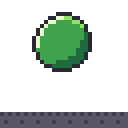
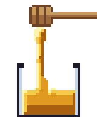
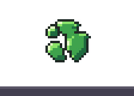
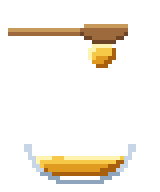

Pixel art slime and honey animation: squash, burst and drip sprite sheets in your browser
Each effect here is a Pixelbolt recipe: a short JSON file that simulates a thick liquid and bakes it into palette pixels, the same pixels every time. Slime gets a yield stress, so it holds its shape and springs back; honey gets viscosity, so it pours as one unbroken rope.
Open one in the Pixelbolt playground, make it firmer, runnier or stickier, and download a sprite sheet, an atlas for your engine or a GIF. It is free and runs in your browser, with nothing to install.
Pixelbolt 0.9.1 · 25 October 2026 · On this page: Slime that squashes and wobbles · Honey pouring into a jar · Slime that bursts · Honey that clings, stretches and lets go
Slime that squashes and wobbles

A blob of green slime drops, squashes flat, springs up, wobbles and settles into a dome that holds its shape.
32 × 32 pixels, 40 frames of 60 ms. It plays once; this preview repeats it after a 0.6 s pause, as the playground does. Shown at 4×.
Open the slime in the playground
Make it yours
These sit under effects → slime in the recipe.
yield(16): below this stress the slime keeps its shape, squashing and springing back. Lower it and the blob slumps and spreads like a thick liquid.tension(2): cohesion that keeps the blob in one piece.gravity([0, 0.5]): how hard it falls and lands.fill(at[15.5, 9.5],radius6.5): where the blob starts and how big it is.outline("k"): the dark one-pixel outline. Delete the line to drop it.
Honey pouring into a jar

Glossy honey runs off a dipper into a jar as one unbroken rope that folds into a mound on the surface.
40 × 48 pixels, 24 frames of 70 ms, looping. Shown at 4×.
Open the honey in the playground
Make it yours
These sit under effects → honey, except palette, which is at the top of the recipe.
viscosity(10): how thick it is. Pixelbolt's schema suggests about 2 to 4 for syrup, 8 to 16 for honey and 32 to 64 for tar.adhesion(1.5): how strongly it holds on to the dipper and the jar.pulseon thedrizzleemitter (amplitude0.15,period12): a gentle swell in the flow, twice a loop.palette(H,y,aandA): the honey's colours, from the highlight to deep amber. Change them for syrup, caramel or something stranger.
Slime that bursts

A ball of green slime bursts in mid-air into chunks that fly out, land and wobble into mounds: a defeated slime enemy, perhaps.
56 × 40 pixels, 40 frames of 60 ms. It plays once; this preview repeats it after a 0.6 s pause, as the playground does. Shown at 4×.
Open the slime burst in the playground
Make it yours
These sit under effects → slime-burst in the recipe.
burstinfill(speed[1.2, 1.8],pieces5): how many chunks, and how fast they fly out in pixels per frame.yield(4): below this stress the chunks keep their shape; push them past it and they flow.tension(3.2): cohesion that keeps each chunk together.gravity([0, 0.25]): how fast the chunks fall back.
Honey that clings, stretches and lets go

Stiff honey clings under a wooden spoon, then thins, stretches, lets go and drops into a bowl of honey. The playground lists it as Honey let-go.
40 × 48 pixels, 44 frames of 70 ms. It plays once; this preview repeats it after a 0.6 s pause, as the playground does. Shown at 4×.
Open the honey drop in the playground
Make it yours
These sit under effects → honey-drop in the recipe.
keys(viscosity 3 from frame 14, then 16 from frame 30): thin the honey so it lets go, then thicken it again as it lands. Without them it stays on the spoon.viscosity(64): the starting thickness, the top of the scale, so it clings.adhesion(4): how strongly it holds on to the spoon.surfaceon thespoonobstacle ("smooth"): the honey meets a smooth outline instead of every pixel step, so it can fall away cleanly.
Make your sprite sheet in four steps
- Open an effect above with its Open … in the playground button. The link carries the whole recipe and names Pixelbolt 0.9.1, and the playground renders it in your browser. There is nothing to install and no account.
- Change a value in the Recipe JSON box. The preview renders again after each edit, and a JSON mistake is reported with its line number.
- Choose a scale for the frame PNG and the GIF, from 1× to 16×.
- Download the files you need (listed below). Copy link makes a link to your edited version.
Export for your game engine
- Sheet PNG: every frame on one transparent sprite sheet.
- Atlas PNG + JSON: the same sheet plus a TexturePacker-style JSON hash with each frame's rectangle, its duration in milliseconds and the named animations. Phaser loads it with
load.atlas. In Godot, Unity or another engine, slice the sheet as a grid of equal cells; the game integration notes explain how. - GIF: the animation for a devlog, a store page or a chat, at the scale you chose. Before you download it, the playground shows its size in pixels and its number of frames.
- Frame PNG: the frame on screen, at the scale you chose.
- Recipe JSON: the recipe itself, to keep, edit or share.
Sheets come at the art's own size, one pixel per pixel. For a bigger sheet, add "sheet": { "scale": 4 } at the top level of the recipe (whole numbers from 1 to 16), or scale it in your engine with nearest-neighbour filtering. Every PNG the playground exports carries its recipe, so you can open it in the playground later (Open file, or drop it on the page) and carry on editing.
The same from the command line
With Node.js 20 or newer, save the recipe (the playground's Recipe JSON button saves it as slime.fluid.json, or open it from the 0.9.1 package and save it), then run:
npx -y pixelbolt@0.9.1 compile slime.fluid.json --out slime.json
npx -y pixelbolt@0.9.1 gif slime.json --scale 4 --out slime.gif
npx -y pixelbolt@0.9.1 render slime.json --out slimecompile runs the simulation and writes the result as an ordinary recipe of frames. gif writes the animation as a GIF. render writes a folder with the sprite sheet, its atlas JSON, every frame as a PNG, an animated PNG, CSS classes, a small Canvas player, a preview page and the recipe. The same commands work for honey.fluid.json, slime-burst.fluid.json and honey-drop.fluid.json.
For AI agents: Pixelbolt also runs as a local MCP server, whose pixel_compile tool compiles these recipes. See Connect an agent through MCP in the README.
Licence
Pixelbolt is free and open source under the MIT licence. The example recipes on this page ship in its MIT-licensed npm package, and its README says the included artwork is original and covered by the same licence.
More pixel art effect guides
- Fire: a campfire, a torch and a hand-drawn flame
- Explosions: a fireball with smoke and sparks, and small particle bursts
- Smoke and steam: a cartoon smoke puff, a steam vent and a dust wave
- Water: a waterfall, a splash, a drip and a dam break
- Magic: a spell swirl and a bubbling potion
All guides · The playground · Pixelbolt home
For agents: pixel art MCP servers compared. All comparisons: compare.